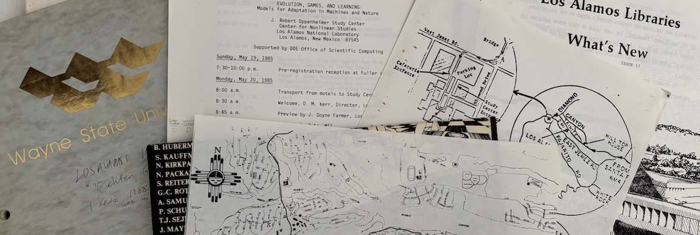

Los Alamos National Laboratory

This poem was born of two summer road trips from Detroit. One to the highlands of Guatemala in 1979 (wanting to be a linguist), and one to the Los Alamos Center for Nonlinear Studies in 1985 for an Evolution, Games, and Learning Conference (as a grad student).
The only public writing connected to the former were some articles I did for the Detroit Guatemala Committee newletter. For the latter, I had a paper in the conference proceedings, published as a special issue of the journal Physica D. But then there was this poem.
I'm including it in this "Anthology/Before" website since I noticed it includes so many elements that would show up in my research work over the subsequent decade: bra-kets, swerves, and fiber bundles, some of which I've dumped here. In my usual voice from back then: a superposition of Wallace Stevens, T.S. Eliot, and early Marilyn Hacker.
It was one of twenty-three poems I finished from age 15 to age 25. About ten of them were for poetry workshops at Wayne State taught by the late Steve Tudor. When I turned 26 I used the nroff/troff unix text formatting tool to typeset them, assembled them as a booklet, then went to Kinko's on the corner of Woodward and Warren to make a bunch of copies. I never tried to publish any. Some of them look ok still. I've not finished a poem since.
Photo (K. Kirby): Materials from 1985 EGL Conference at LANL.